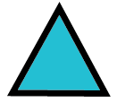
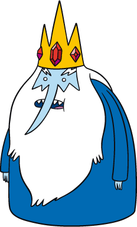
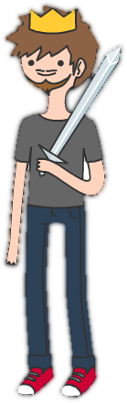

O criador está congelado, use o BMO ao lado e faça perguntas ao Finn que o ajudarão a encontra-ló e por fim descongelá-lo e salvar assim a Terra de Ooo. Só escrever e apertar Enter a vontade!
{{sentenca?.texto}}
{{sentenca?.texto}}
Finn está digitando uma mensagem
Parece que o Finn precisou sair para a batalha, tente novamente mais tarde.


Parece que o rei gelado conseguiu capturar e congelar o criador da Terra de Ooo. Só você pode salvá-lo. Use o chatbot e descubra como resgatar o guerreiro-criador!

Você conseguiu descongelar o criador com as suas perguntas!! Clique aqui para descobrir mais ou feche essa janela para continuar sua conversa com o Finn.